eclipse汉化
安装tomcat
eclipse创建一个Web项目
eclipse汉化
此方法用于eclipse2022-6版本
点击help-install New Software
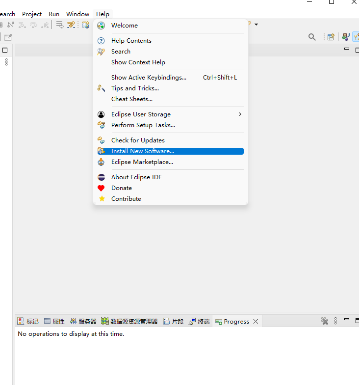
点击add添加url
https://download.eclipse.org/technology/babel/update-site/latest/
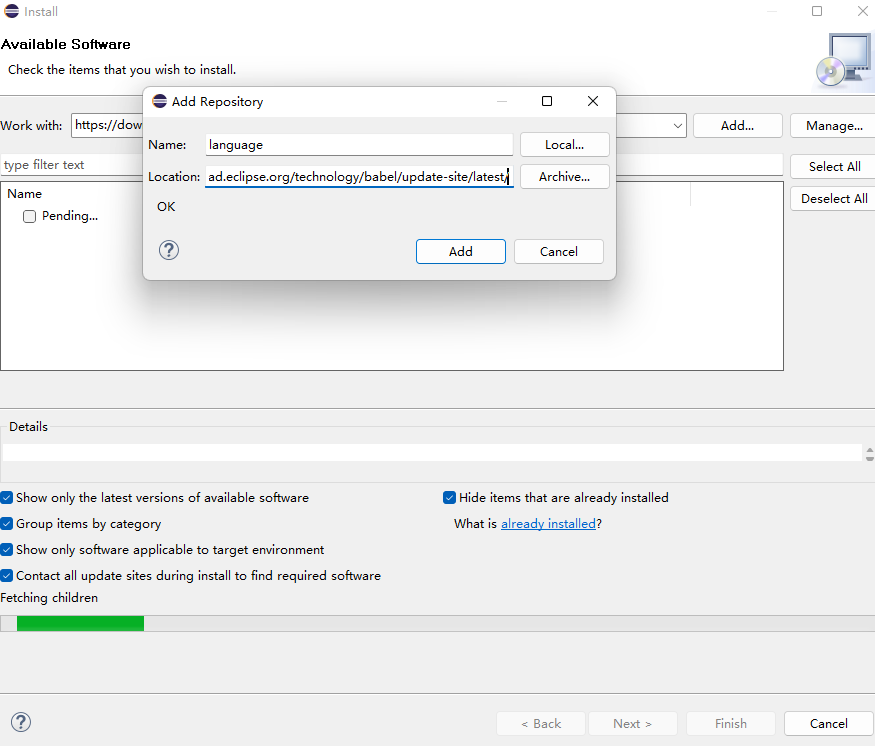
选择chinese(simple),点击finish
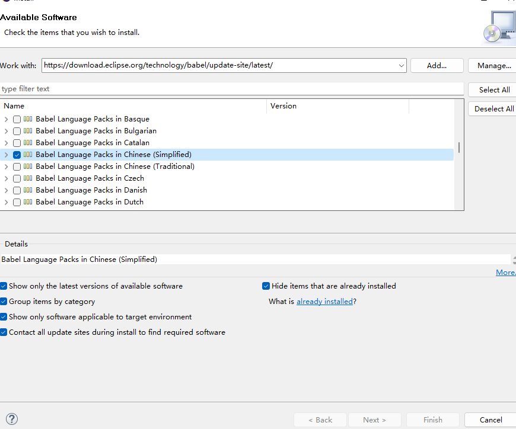
安装完成后重启eclipse,然后就是中文了
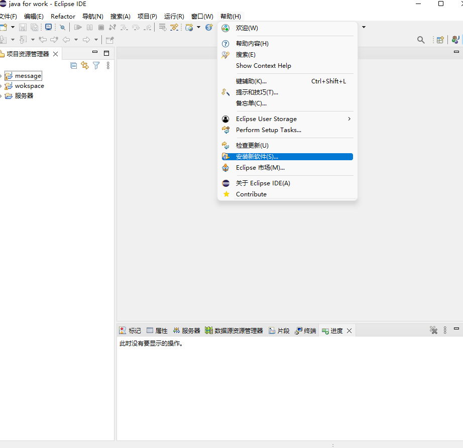
安装tomcat
tomcat安装以10.0.27版本为例
点击Downloads
官网:https://tomcat.apache.org
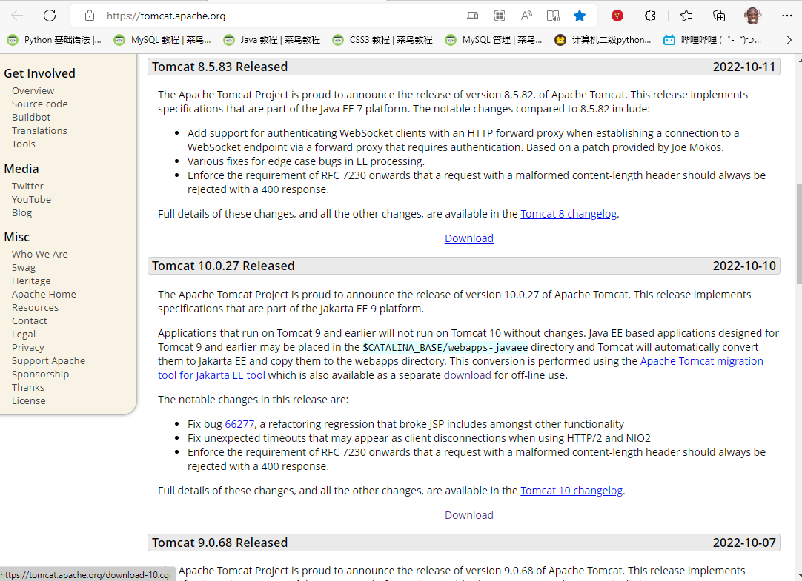
点击下载windows版64位
下载后将文件解压
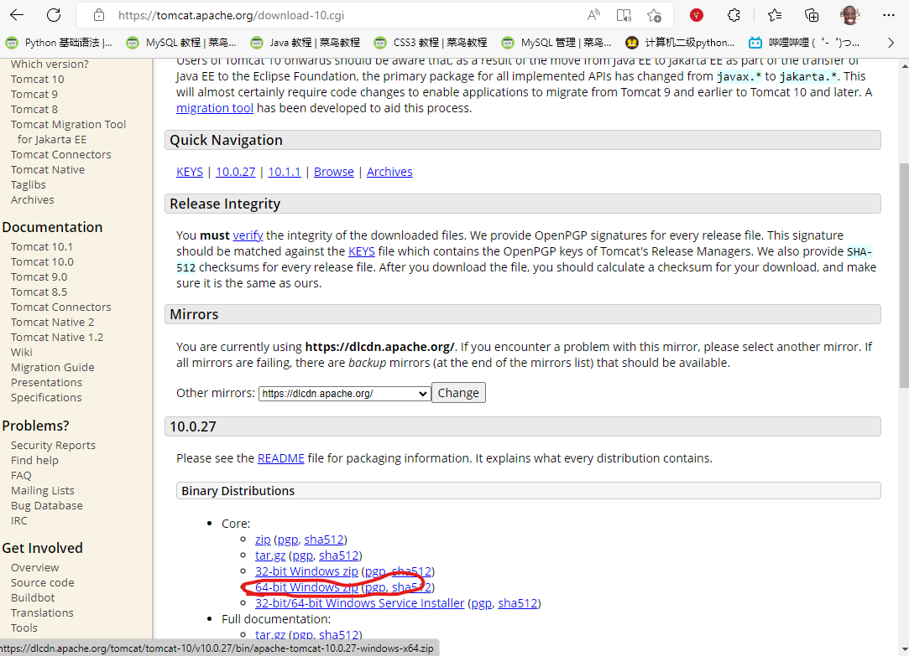
打开eclipse
选择首选项
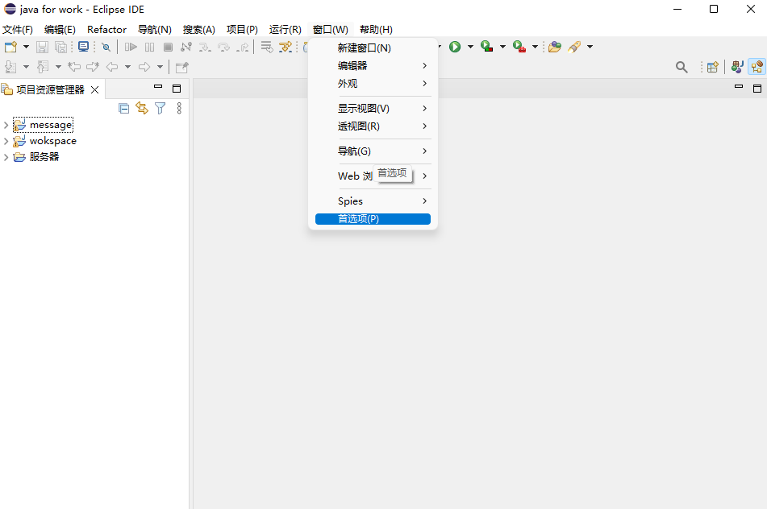
选择 服务器-运行时环境-点击添加
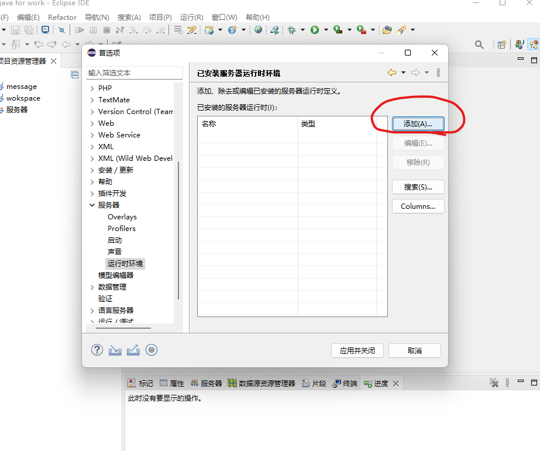
选择-Apache-Apache Tomcat v10.0-勾选创建一个本地服务器-点击完成-应用并关闭
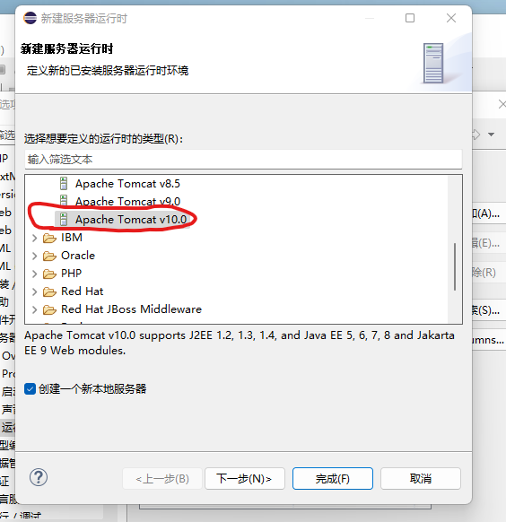
eclipse创建一个Web项目
首先点击 帮助-安装新软件 work with填写:
2022-06 - https://download.eclipse.org/releases/2022-06/202206151000
勾选Web-点击完成
下载安装后重启eclipse
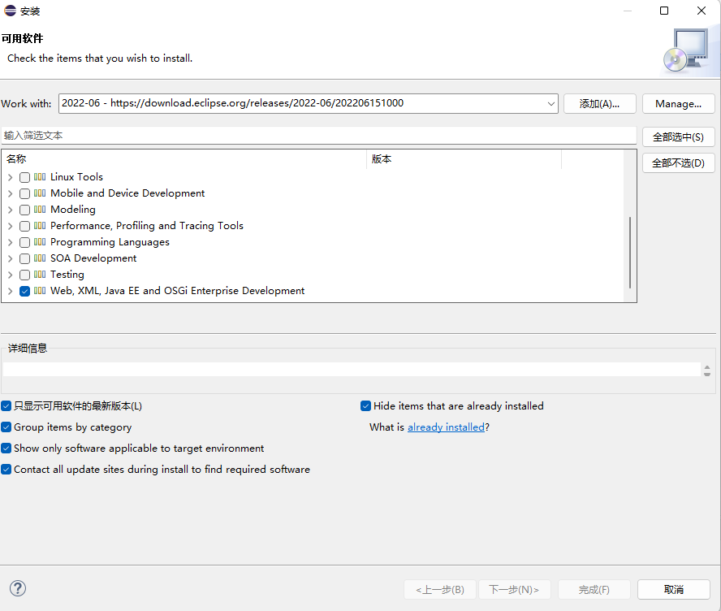
选择新建-动态web项目(没有的话去其他里面找)
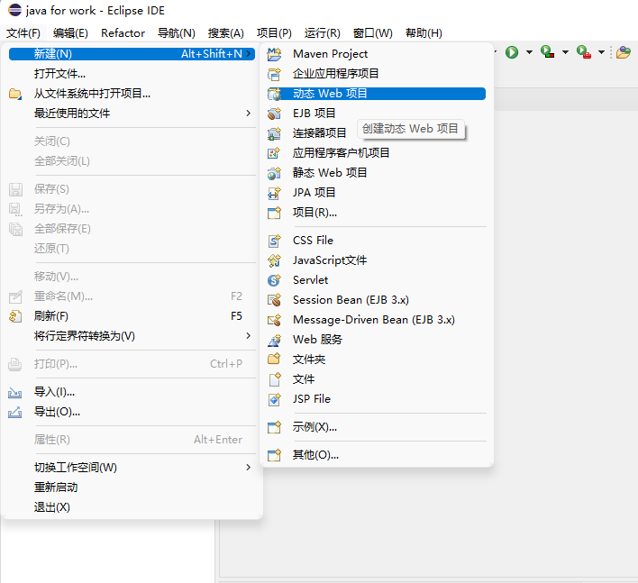
按照图片配置
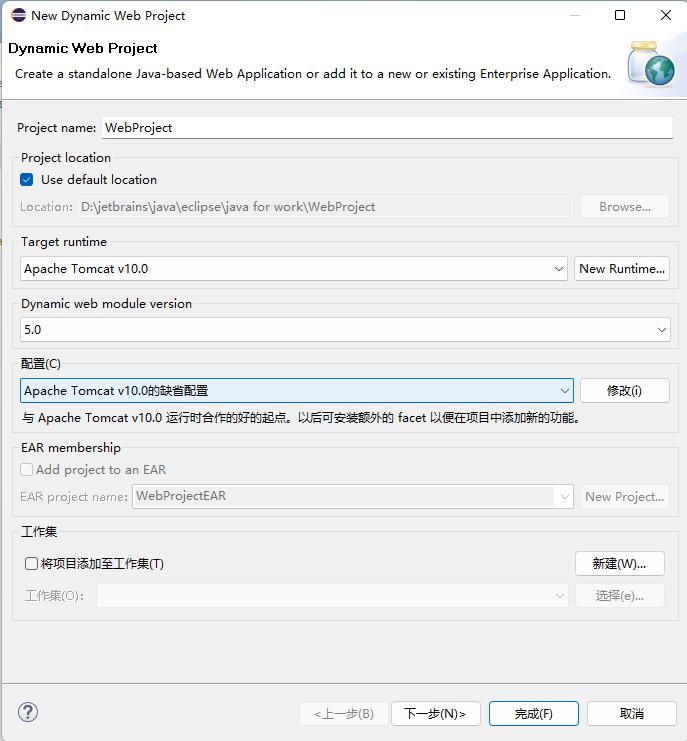
选择-下一步-下一步-勾选Generte web.xml deployment descriptor
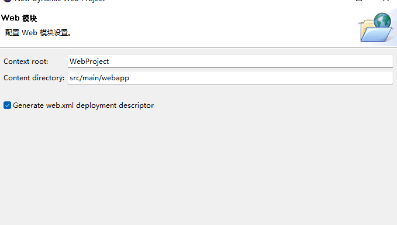
完成后主体结构长这样
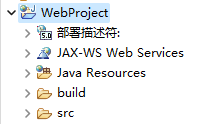
项目-右键-New-jsp File 新建一个jsp文件
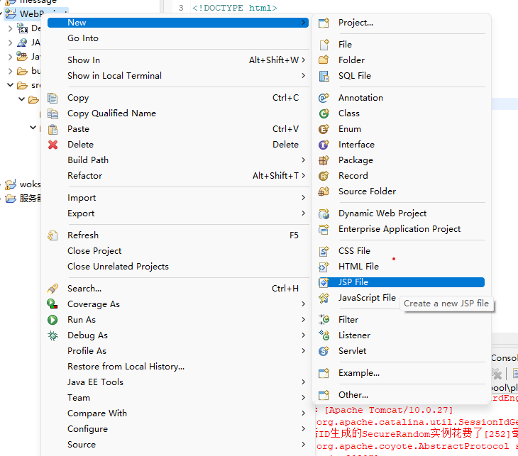
命名为NewFile.jsp-点击finish
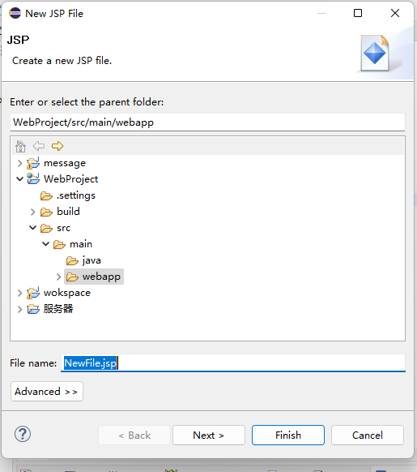
在body中添加内容
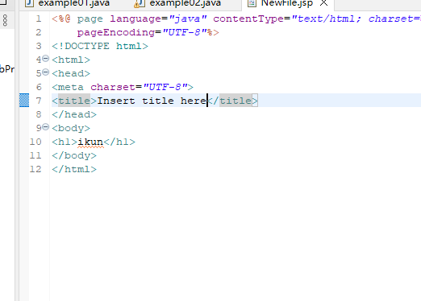
右键项目-Run As-Run on Server
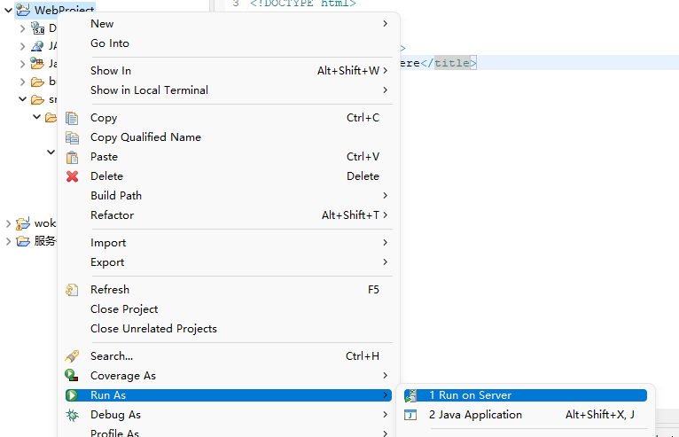
等待项目启动
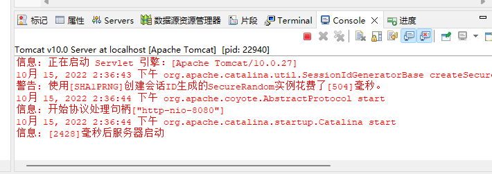
在浏览器中输入localhost:8080/WebProject/NewFile.jsp 就能访问
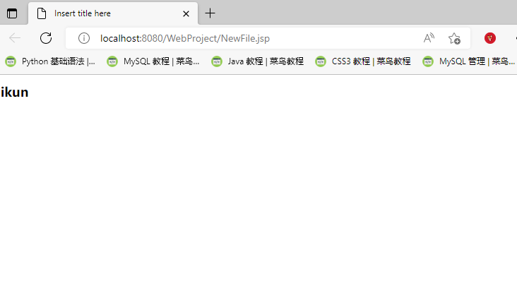